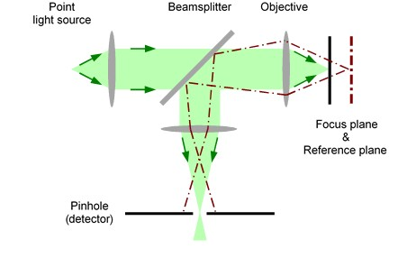

|
共聚焦性
|
共聚焦显微镜需要点光源（通常为激光），将其聚焦到样品上。反射光（也包括拉曼散射或荧光）由同一物镜收集，并通过探测器前面的针孔聚焦（图 1）。这确保只有来自图像焦平面的光才能到达探测器，从而大大提高了图像对比度，并且在正确选择针孔尺寸的情况下，略微提高了分辨率（分辨率最大增益：因子 √2）。

图 1：共聚焦显微镜的基本设置
在 WITec 系统中，激光通过单模光纤传输。这种类型的光纤仅支持单一横模（LP01，高斯光束），可以聚焦到衍射极限点。样品反射的光由物镜收集，并作为平行光束导向显微镜顶部。在这里，光被聚焦到光纤上。该光纤的纤芯充当共聚焦显微镜或共聚焦拉曼显微镜的针孔。
该光纤将光束引导至光子计数设备（用于共聚焦显微镜）或配备 CCD 相机的光谱仪（用于共聚焦拉曼显微镜）。使用光纤进行光束传输和信号采集非常便捷，因为激发激光、光谱仪和探测器不需要安装在显微镜本身上。它们可以放置在远离显微镜主体的任何位置。